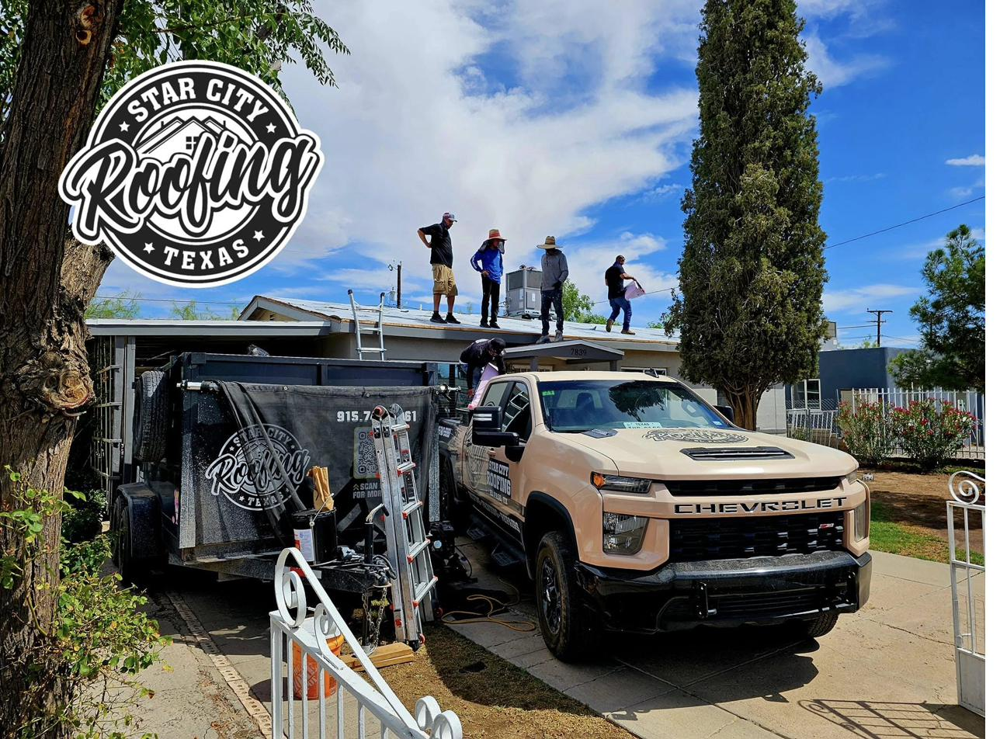
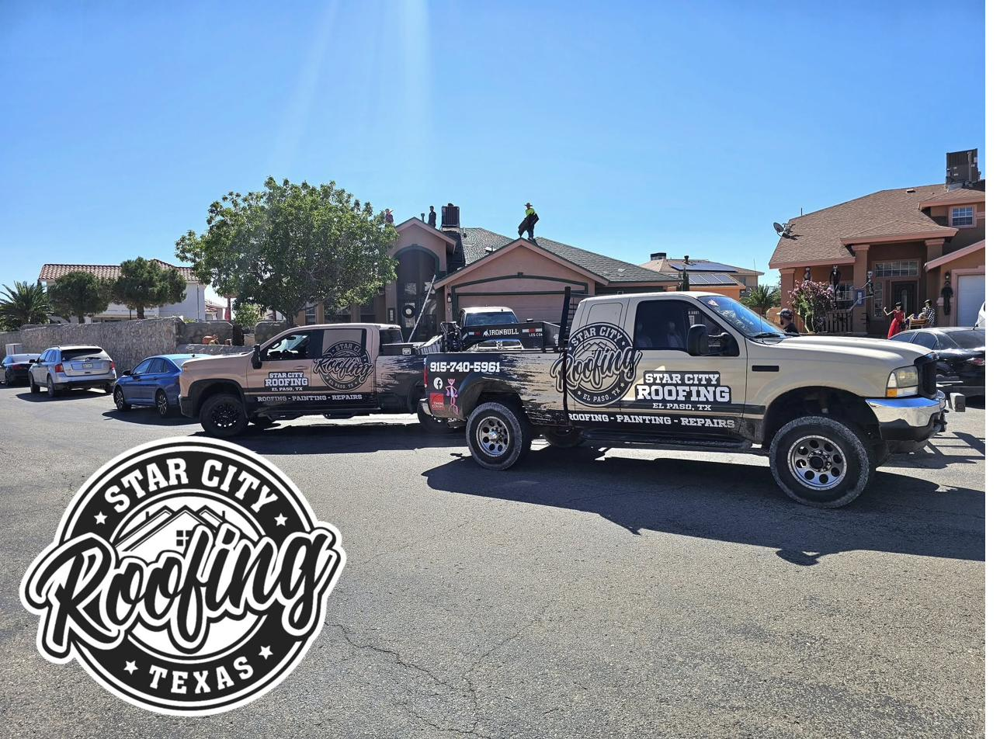
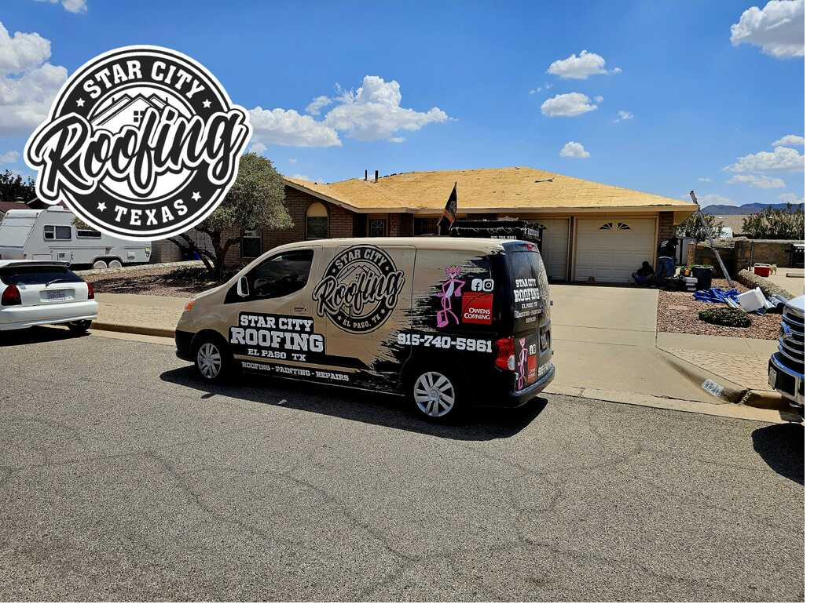
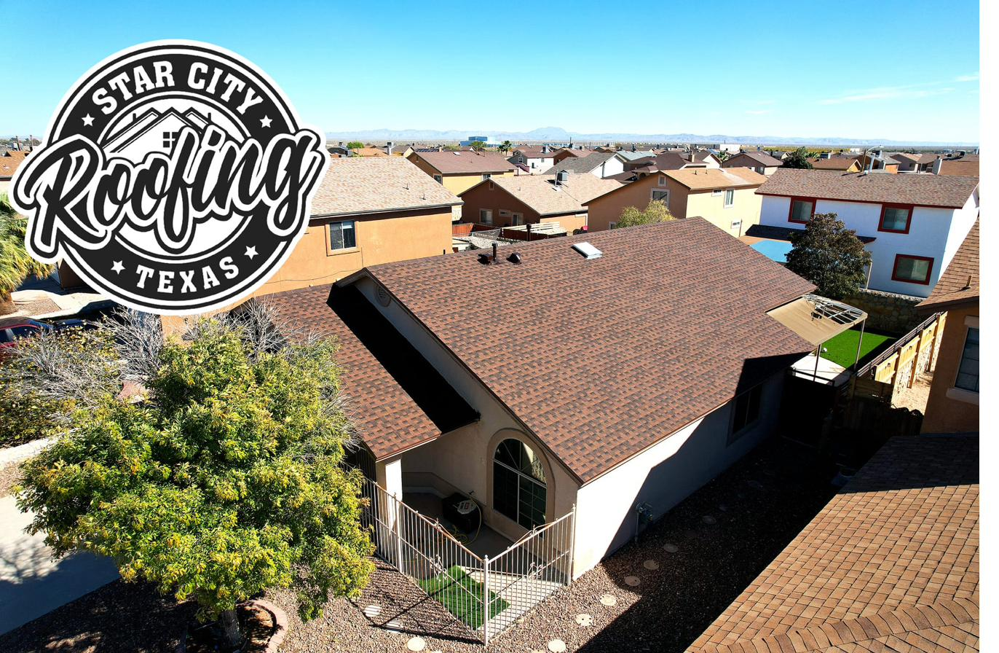
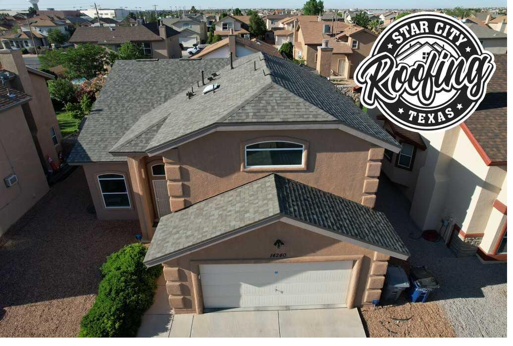
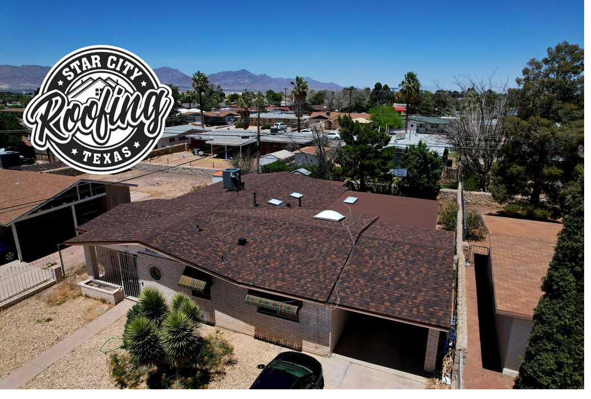

Locally owned, based in Northeast El Paso. Seven years of doing the job right, roofs we're proud to put our name on.
Our Story
Alan started Star City Roofing in El Paso with one goal: be the contractor you'd actually recommend to your neighbors. Not the biggest, not the cheapest, the one you could trust. Seven-plus years later, that's still the whole plan.
We tell homeowners the truth. If you only need a repair, we'll tell you. If your roof is fine for another few years, we'll tell you that too. We've walked away from jobs because pushing a replacement wasn't the right call, and those customers come back when it finally is. That's how we want to work.
Our shop is in Northeast El Paso (79934). We work in Woodhaven, Montwood, Sunrise, the Upper Valley, Horizon City, Socorro, the West Side, wherever you are in El Paso, we know the neighborhoods because we work in them every week.

4.9★ Google
181+ Verified Reviews
Owens Corning
Preferred
Certified since 2021
BBB A+ Rated
Better Business Bureau
7+ Years
in El Paso
Locally owned, not a franchise
Licensed
& Insured
Fully licensed in Texas
Most roofing contractors can install Owens Corning shingles, but only Preferred Contractors are certified to offer the Owens Corning System Warranty, the highest level of protection Owens Corning offers, requiring the full certified roofing system. Star City has held this certification since 2021, which means your new roof comes with manufacturer-backed warranty protection that non-certified installers simply cannot provide.
We don't ask for large deposits upfront. Payment is due when the job is complete and you're satisfied with the work. This keeps us accountable, we finish the job right because that's the only way we get paid. In an industry full of contractors who take money and disappear, this policy says everything about how we operate.
If your roof only needs a repair, we'll tell you, we won't push a replacement to increase the ticket. If you don't need work at all, we'll tell you that too. Long-term reputation in El Paso matters more to us than a single job's revenue. The 4.9-star rating reflects that trust built over hundreds of real interactions with real El Paso homeowners.
Seven years roofing in El Paso teaches you what this climate does to materials. The 300+ days of UV radiation, the thermal cycling from 105°F days to 40°F nights, the summer hail that rolls through July–September, the Franklin Mountain downdrafts that blow ridge caps off roofs across the 79912 and 79902 ZIP codes. We pick materials and installation methods based on what actually holds up here, not from a corporate franchise handbook.
Roofing is messy work, thousands of old shingles, underlayment, fasteners, and debris come off a roof during a replacement. Our crew runs a magnetic sweeper over your yard and driveway to pick up nails, hauls off all debris the same day, and leaves your property cleaner than they found it. Multiple reviews call this out specifically because most contractors don't do it.
After a hailstorm or storm, the claim process can be as stressful as the damage itself. We photograph every impact point, show up during the adjuster's inspection, and format our estimate to match the Xactimate standards insurers use. You get the documentation you need so you're not leaving money on the table.





4.9★ average rating across 181+ Google reviews
"Excellent customer service. Alan and his team are top notch. From the initial estimate to the final walk-through, the communication was great and the work was outstanding."
Joe D., El Paso"Star City did an amazing job. Quick to schedule, clean, kept in touch through the whole process, and very reasonably priced. I'd recommend them to everyone in El Paso."
Akp, El Paso"Total roof replacement done in 2 days. Team was professional, respectful, addressed all my concerns, and hauled off all debris. Couldn't have asked for better service."
Ashley H., Northeast El Paso"Crew was on time, efficient, and very professional. Impressed with the thoroughness and attention to detail. Would definitely recommend Star City Roofing."
Sotero R., El Paso"We had hail damage and didn't know where to start. Alan walked us through the whole process, was present during the adjuster visit, and the roof came out perfect. Honest guys."
Maria G., East El Paso"Best decision I made was calling Star City. They told me I only needed a repair, not a full replacement like another company told me. Saved me thousands. Integrity matters."
David T., Horizon CityRoof Replacement
Full tear-off and replacement. Owens Corning Duration and TruDefinition shingles.
Roof Repair
Pipe boots, flashing, missing shingles, ridge caps, and leak diagnosis.
Storm Damage
Hail and wind damage assessment, documentation, and insurance claim support.
Flat Roof Coating
Elastomeric coatings for flat roofs, extend life 10–15 years, reduce cooling costs.
Call us or fill out the form, same-day response, no pressure, no obligation.
Call us directly:
(915) 740-5961